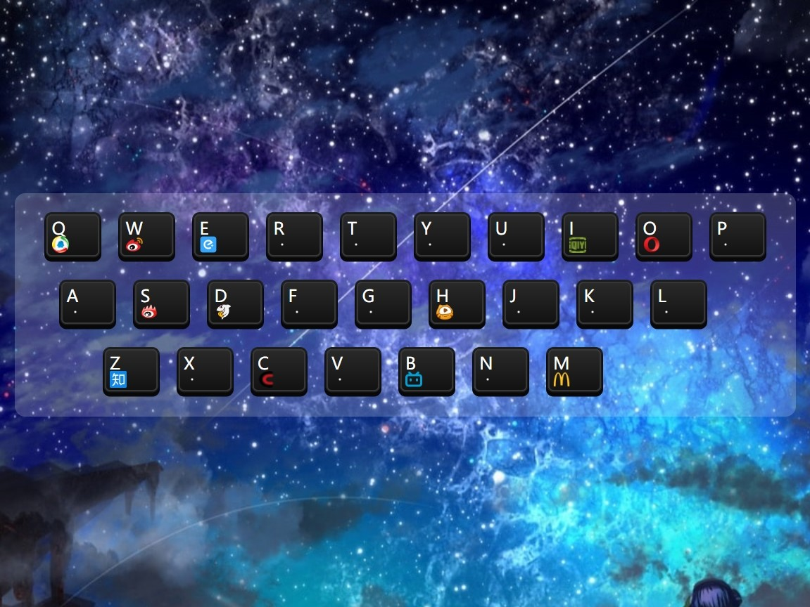
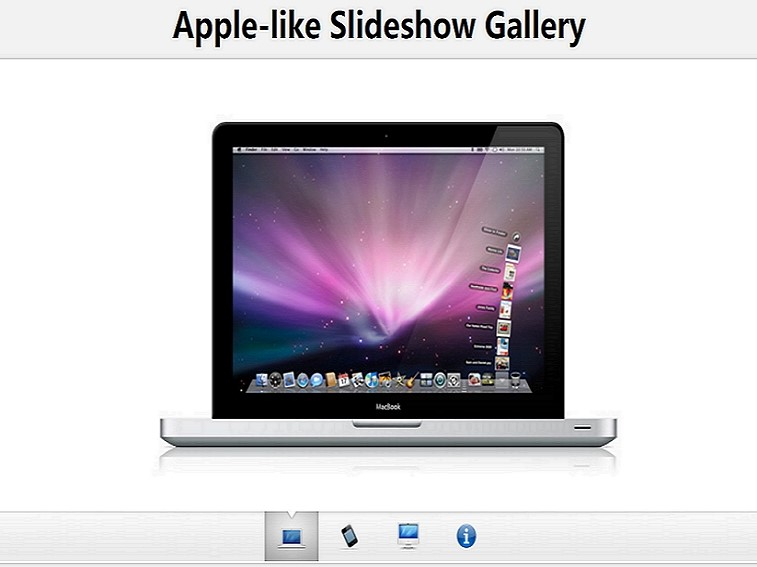

RS
card
关于
技能
作品
作品1
作品2
作品3
博客
博客1
博客2
博客3
日历
联系方式
其他
Hello
唐艺轰
前端开发工程师
年龄
29
所在城市
深圳
邮箱
tangyihong063@163.com
手机
13888888888
下载PDF简历
唐艺轰，前端工程师，现在在饥人谷学习中。
技能：前端开发，Rails 开发，Node.js 开发
技能
HTML 5 & CSS 3
JavaScript
jQuery
Vue.js
React.js
Node.js
作品集
 
留言
姓名
留言内容